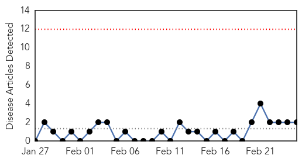
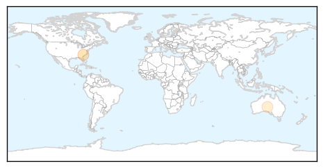

West Nile Virus
30-Day Web Trend
0 alerts, 0 warnings

30-Day Twitter Trend
0 alerts, 0 warnings

Article Locations

Article Confidences

Top Articles:
- 0.947
- Is a Wave of Poliolike Symptoms in California Cause for Alarm?
- 0.945
- Overlooked Virus May Be Cause Of Paralyzing Disease In California : Shots
- 0.931
- Overlooked virus may be cause of paralyzing disease in California
- 0.706
- Researchers Look For Clues To Polio-Like Illness In California Children
- 0.613
- Researchers Look For Clues To Polio-Like Illness In California Children
Top Tweets:
-
No tweets found for Feb 25, 2014
Hepatitis
30-Day Web Trend
0 alerts, 0 warnings

30-Day Twitter Trend
0 alerts, 0 warnings

Article Locations
Article Confidences

Top Articles:
Top Tweets:
-
No tweets found for Feb 25, 2014